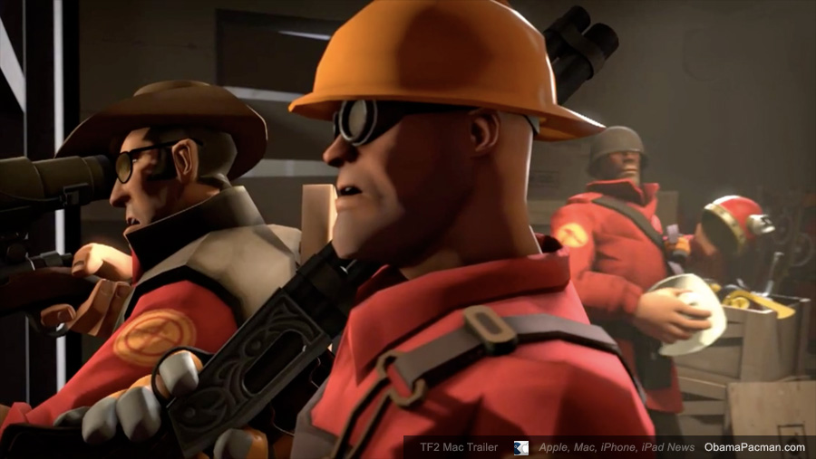
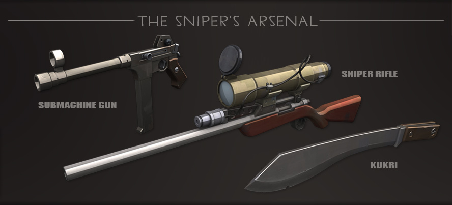

About
"Bad at gaming" is a miniture gaming community madeup of the people from "Team Log?"
Team Fortress 2
Team Fortress 2 is a team-based multiplayer first person shooter developed by Valve Software as part of the game bundle The Orange Box. It was first released for Microsoft Windows, Xbox 360, and PlayStation 3 on October 10, 2007. Following suit, it was released as a standalone title on April 9, 2008, and on June 10, 2010, Team Fortress 2 was released for Mac OS X. The PC and OS X versions of Team Fortress 2 adopted a "Free to Play" model on June 23, 2011 with all revenue being generated from micro transactions in the In-game Store. After several months of closed beta, Team Fortress 2 was finally released for Linux operating systems on February 14, 2013.
The game was first announced in 1998 as a sequel to the original Team Fortress mod for Quake, but has since been through various concept and design periods. In 1999, the game appeared to be abandoning the art styles of the original Team Fortress Classic by transitioning toward a more realistic and militaristic style of gameplay. However, the design continued evolving over the game's nine-year development period and game engine switch. The final art style rendition of Team Fortress 2 resembles that of the original Team Fortress and Team Fortress Classic games, and also features a cartoon-like visual style based on the art of Dean Cornwell, J. C. Leyendecker, and Norman Rockwell. Team Fortress 2 follows a popular trend in recent CGI films, in particular, films recently made by Pixar Animation Studios, such as The Incredibles.
Gameplay
Like its predecessors, Team Fortress 2 is centered around two opposing teams competing for an objective. These two teams are meant to represent a demolition and a construction company as a part of the backstory: Reliable Excavation Demolition (RED) and Builders League United (BLU). Players can choose to play as one of nine classes in these teams, each with their own unique strengths, weaknesses, abilities, and roles. Although the abilities of a number of classes have changed from earlier Team Fortress incarnations, the basic elements of each class have remained.
Team Fortress 2 is the first of Valve's multiplayer games to incorporate detailed statistics for players. These statistics include the time spent playing as each class, the average point score, and the most captures or objectives achieved in a single round. Persistent statistics tell the player how they are improving in relation to these statistics, such as if a player comes close to their record for the damage inflicted in a round. Team Fortress 2 also features numerous achievements for carrying out certain tasks, such as scoring a certain number of kills or completing a round within a certain time. New sets of class-specific achievements were added in updates after main release. These have added new abilities and weapons to each class once unlocked by the player. Unlocked achievements and statistics from previously played games are displayed on the player's Steam Community or Xbox LIVE profile page.
Classes
Offense
Scout
Born and raised in Boston, Massachusetts, the Scout is a fast running scrapper with a baseball bat and a snarky 'in-your-face' attitude. He is very rude, and seems to think he can handle anything. He often acts a lot tougher than he can actually prove to be, though he's certainly not weak. He is the fastest mercenary on the battlefield. His Double Jump leaves slower opponents struggling to keep up and helps him navigate the terrain and dodge oncoming projectiles. Carrying a Scattergun, a Pistol, and a Bat, the Scout is ideal for aggressive fighting and flanking. The Scout is a good class for quick hit and run tactics for sapping away the enemies' health due to his ability to get in, do damage and dash away before even being noticed. The Scout is an excellent choice for completing objectives quickly. He can capture control points and push carts at the rate of 2 players. His speed makes him a natural for capturing the Intelligence; his double jump allows him to carry it along unexpected paths. The Scout is voiced by Nathan Vetterlein.
The youngest of eight boys from the south side of Boston, the Scout learned early how to solve problems with his fists. With seven older brothers on his side, fights tended to end before the runt of the litter could maneuver into punching distance, so the Scout trained himself to run. He ran everywhere, all the time, until he could beat his pack of mad dog siblings to the fray.
"Is anyone even paying attetion to me?" - Scout
Soldier
The Soldier is a crazed patriot from America's heartland. Tough and well-armed, he's versatile, capable of both offense and defense, and a great starter class to get familiar with the game. The Soldier is well known for his spectacular rocket jump. In defiance of all good sense and judgment, the Soldier can detonate a rocket at his feet and launch himself skyward at the cost of some health. This ability allows the Soldier to pop up in unexpected places and reach areas off-limits even to the Scout's double jump. The two grenades on the Soldier's character model cannot be used unless the player finishes the Kamikaze taunt, which can only be used when the Equalizer or Escape Plan is equipped. The Soldier is voiced by Rick May.
Though he wanted desperately to fight in World War 2, the Soldier was rejected by every branch of the military. Undaunted, he bought his own ticket to Europe. After arriving and finally locating Poland, the Soldier taught himself how to load and fire a variety of weapons before embarking on a Nazi killing spree for which he was awarded several medals that he designed and made himself. His rampage ended immediately upon hearing about the end of the war in 1949.
"Last one alive lock the door"- Soldier
Pyro
The Pyro is a mumbling pyromaniac of indeterminate origin who has a burning passion for all things fire related. As shown in Meet The Pyro, the Pyro appears to be insane and delusional, living in a utopian fantasy world known as Pyroland. The Pyro specializes in fighting enemies at close range using a homemade Flame Thrower. Enemies set on fire suffer from afterburn and take additional damage over time, allowing the Pyro to excel at hit-and-run tactics. Due to the Flamethrower’s short range, the Pyro is weaker at longer ranges and relies heavily on ambushing and taking alternate routes to catch opponents off-guard. Although categorized as an offensive class, the Pyro brings a few sources of utility to the battlefield. The Pyro’s compression blast, for example, can deflect enemy projectiles, extinguish burning teammates, and forcibly reposition any enemy, including one under the effects of an invincibility-granting ÜberCharge. Because enemies hit by fire are visibly ignited, the Pyro is the best class for Spy-checking, as even a small puff of flame can nullify the Spy’s Cloak and disguise. Additionally, the Pyro can use the Homewrecker, Maul, or Neon Annihilator to protect an Engineer’s buildings from an enemy Spy's Sapper or use the Scorch Shot or Detonator to jump to normally unreachable places. The Pyro wears an asbestos-lined suit that provides protection from the afterburn of other Pyros, though it does not add any resistance to the direct damage taken from the flamethrower. The three incendiary grenades on the Pyro's character model are purely cosmetic and cannot be used. The Pyro is voiced by Dennis Bateman.
Only two things are known for sure about the mysterious Pyro: he sets things on fire and he doesn't speak. In fact, only the part about setting things on fire is undisputed. Some believe his occasional rasping wheeze may be an attempt to communicate through a mouth obstructed by a filter and attached to lungs ravaged by constant exposure to his asbestos-lined suit. Either way, he's a fearsome, inscrutable, on-fire Frankenstein of a man. If he even is a man.
"Mmmrpgh crpyha drghya" - Pyro
Defense
Demoman
The Demoman is a scrumpy-swilling demolitions expert from the Scottish Highlands, and is one of the more versatile members of the team. A master of explosives, the Demoman strategically deals indirect and mid-range combat and massive splash damage. Armed with his Grenade Launcher and Stickybomb Launcher, the Demoman uses his only good eye and the knowledge of his surrounding environment for well-timed detonations that send enemies skyward, often in many pieces. Should anyone get past his explosive ordinance however, they will be shocked to learn the Demoman is extremely proficient at melee combat, being one of the deadliest melee classes in the game, with a variety of powerful melee unlocks in his arsenal. The Demoman excels at swift destruction; he can bounce his grenades at creative angles to wreak havoc on enemy Sentry Gun emplacements while remaining safely out of sight. His stickybombs are a perfect tool for area denial, and are effective at keeping opponents away from any carts, control points, or Intelligence that he deems off-limits. The Demoman is voiced by Gary Schwartz.
A fierce temper, a fascination with all things explosive, and a terrible plan to kill the Loch Ness Monster cost the six year old Demoman his original set of adoptive parents. Later, at the Crypt Grammar School for Orphans near Ullapool in the Scottish Highlands, the boy's bomb-making skills improved dramatically. His disposition and total number of intact eyeballs, however, did not.
Word of his proficiency with explosives spread, and it was not long before Crypt Grammar received two visitors; the Demoman's real parents, who lovingly explained that all Demomen are abandoned at birth until their skills manifest themselves, a long-standing, cruel, and wholly unnecessary tradition among the Highland Demolition Men. His unhappy childhood had ended, but his training had just begun.
"They're gonna hav'ta glue you back together, IN HELL" - Demoman
Heavy
The Heavy is a towering hulk of a man that hails from the USSR. He is the largest and possibly most dangerous class in Team Fortress 2. Boasting the most default health and devastating firepower from his trusty Minigun, the Heavy is no pushover. The Heavy's Minigun can inflict heavy damage at a high rate of fire, allowing him to mow down opposing babies, cowards and teeny-men in seconds. The Heavy's movement speed is his main weakness. Revving up or firing his Minigun brings his already unimpressive speed down to a snail's pace, making him a very easy target for Snipers and Spies. His slow speed makes him more dependent on support from Medics and Engineers to keep him in the fight. Aside from decimating entire teams, the Heavy is able to provide further support for his comrades with an oft-required health boost via his Sandvich, which, when consumed, is capable of healing him to full health. It can also be dropped to provide an instant 50% health boost to his teammates. However, if he isn't careful, an enemy may pick up the dropped Sandvich for a health boost of their own.
The Heavy is the face of Team Fortress 2. He appears prominently on box-art and promotional materials, starred in the very first Meet the Team video, and has appeared in all further videos to date.
The Heavy is voiced by Gary Schwartz. 
Like a hibernating bear, the Heavy appears to be a gentle giant. Also like a bear, confusing his deliberate, sleepy demeanor with gentleness will get you ripped limb from limb. Though he speaks simply and moves with an economy of energy that's often confused with napping, the Heavy isn't dumb; he's not your big friend and he generally wishes that you would just shut up before he has to make you shut up.
"You, you are DEAD!" - Heavy
Engineer
The Engineer is a soft-spoken, amiable Texan with an interest in all things mechanical. He specializes in constructing and maintaining Buildings that provide support to his team, rather than fighting at the front lines. The Engineer's various gadgets include the Sentry Gun, an automated turret that fires at any enemy in range, the Dispenser, a device that restores the health and ammunition of nearby teammates, and Teleporters that quickly transport players from point A to point B. Because the Engineer's ingenious devices are under constant threat from explosives and devious enemy Spies, a good Engineer must keep his gear under a watchful eye and under repair with his Wrench at all times. When the Engineer needs to get his hands dirty, his trio of generic yet capable weapons, along with the assistance of his helpful hardware, make him more than capable of holding his own in a fight. If need be, the Engineer can even pick up and haul constructed buildings to redeploy them in more favorable locations (unless using the Eureka Effect). The Engineer is voiced by Grant Goodeve.
This amiable, soft-spoken good ol' boy from tiny Bee Cave, Texas loves barbecues, guns, and higher education. Natural curiosity, ten years as a roughneck in the west Texas oilfields, and eleven hard science PhDs have trained him to design, build and repair a variety of deadly contraptions.
"Well what did you do that for dummy" - Engineer
Support
Medic
The Medic is a Teutonic man of medicine. While he may have a tenuous adherence to medical ethics, he is nonetheless the primary healing class of the team. Although the Medic's Syringe Gun and Bonesaw aren't the greatest weapons for direct combat, he can typically still be found near the front lines, healing wounded teammates while trying to stay out of trouble. When the Medic focuses his Medi Gun on a teammate, they will regain health points. Teammates who are already at full health will have their health buffed beyond the normal limit, up to 150% of their base health capacity. Teammates who have not taken damage recently will be healed more rapidly, encouraging smart withdrawals when injured. When healing, the Medic will gradually fill a unique ÜberCharge bar, faster if healing injured teammates. When the ÜberCharge bar is fully charged, the Medic's healing gun will begin to crackle with small jolts of electricity, indicating that he can now deploy a unique charge to benefit his patient and himself for eight seconds. A charge from the Medi Gun offers temporary invulnerability, from the Kritzkrieg guaranteed critical hits for his patients, from the Quick-Fix rapid healing and immunity to knock back, and from the Vaccinator enhanced damage resistance. Although the Medic cannot heal himself, he is capable of slowly regenerating health over time, and is the only class capable of doing so naturally. The longer a Medic stays out of combat and avoids taking damage, the greater the increments of health which he will passively heal. An injured Medic will begin regenerating health at a rate of 3 health points per second, scaling up over the following ten seconds to a maximum of 6 health per second (This base rate can be positively affected by the Amputator and negatively affected by the Blutsauger). The Medic is voiced by Robin Atkin Downes.
What he lacks in compassion for the sick, respect for human dignity, and any sort of verifiable formal training in medicine, the Medic more than makes up for with a bottomless supply of giant needles and a trembling enthusiasm for plunging them into exposed flesh. Raised in Stuttgart, Germany during an era when the Hippocratic oath had been downgraded to an optional Hippocratic suggestion, the Medic considers healing a generally unintended side effect of satisfying his own morbid curiosity. "Would you like a second opinion? You are also ugly!" - Medic
"Would you like a second opinion? You are also ugly!" - Medic
Sniper
Hailing from the Australian Outback, the Sniper is a tough and ready crack shot. The Sniper's main role on the battlefield is to pick off important enemy targets from afar using his Sniper Rifle and its ability to instantly kill a target with a headshot. He is effective at long range, but weakens with proximity, where he is forced to use his Submachine Gun or his Kukri. As a result, the Sniper tends to perch on higher grounds or in hard-to-see places, where he can easily pin down enemies at chokepoints. Although he is typically known for instantaneously killing enemies at a distance, the Sniper can use the Huntsman to get closer to the enemy. Additionally, the Sydney Sleeper and the mysterious Jarate allow him to take on a support role by causing enemies to take increased damage. The Sniper is voiced by John Patrick Lowrie.
Half rugged outdoorsman, half alien observer, this taciturn strip of beef jerky has spent the better part of his life alone in the bush, slow baking under the Australian sun.

"Thanks for standing still Wanker!" - Sniper
Spy
The Spy, hailing from an indeterminate region of France, is an enthusiast of sharp suits and even sharper knives. He relies on stealth and trickery to aid his team. Using a unique array of cloaking watches, he can render himself invisible or even fake his own death, leaving unaware opponents off-guard. His Disguise Kit lets him take on the form of any class on either team, allowing him to blend in while behind enemy lines before stabbing his unsuspecting "teammates" in the back. In fact, a swift backstab with any of the Spy's knives will kill any foe in a single hit - provided they aren't under the effects of any type of invulnerability or immense damage reduction. In addition to being able to swiftly assassinate key enemies, the Spy possesses the ability to disable and destroy Engineer-constructed buildings with his Sapper. Once attached to an enemy building, the Sapper disables and slowly drains health from the building. However, a Sapper can be removed by an Engineer, or Pyro wielding the Homewrecker, Maul, or Neon Annihilator. The Spy is able to enter an enemy teleporter and can use this to make his way to the enemy team, and blend in amongst them. Whereas most players can only see the names and health of their teammates, the Spy can observe the names and health of the enemy team as well, allowing him to relay useful intelligence. This ability is unique to only the Spy and a Medic carrying the Solemn Vow. The Spy is voiced by Dennis Bateman.
He is a puzzle, wrapped in an enigma, shrouded in riddles, lovingly sprinkled with intrigue, express mailed to Mystery, Alaska, and LOOK OUT BEHIND YOU! but it is too late. You're dead. For he is the Spy - globetrotting rogue, lady killer (metaphorically) and mankiller (for real).
"I never really was on your side." - Spy